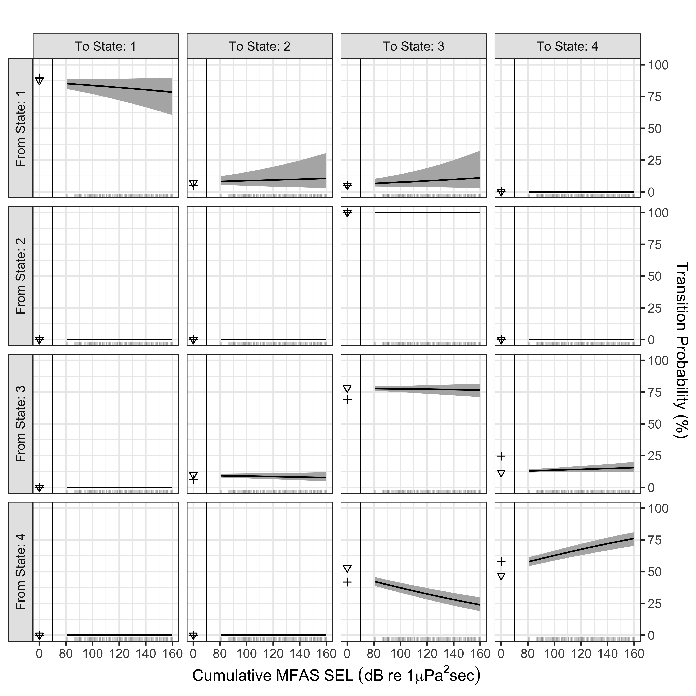

Note: see code for details on how to produce optional interactive graphs and tables. They are not included in the rendered version in the repository because they result in an html file that exceeds GitHub’s file size rules.
Tag Deployment Summary
Table 1: Metadata for all analyzed tag deployments. Full record duration is usually longer than analyzed record duration because modeling included only time-periods where acoustic data were recorded (and many tags recorded high-resolution movement data for an additional period at the end of the deployment). In addition, only complete dives were included in analysis. All other columns in the table are computed for analyzed data only. The number of Typical and Variant dive cycles is based on the fitted HHMM, using the Viterbi algorithm to estimate the most likely state sequence for each whale. In addition to the number of dive cycles including MFAS sounds, we note the number of dive cycles for which review of the acoustic data indicated confirmed presence of echosounder, impulsive, or orca sounds.
Comparison of fitted models
These models were fitted including all dive cycles with acoustic data.
Table 2: Model comparison results for HHMMs.
Rates of Transition Between States
Dive-cycle Scale
Figure 1: Rates of transition between states at the dive cycle scale.
5-minute Scale

Figure 2: Rates of transition between states at the 5-minute scale.
State-dependent distributions with data
Dive-cycle Scale
Figure 3: Characteristics of state-dependent distributions at the dive cycle scale.
5-minute Scale
Figure 4: Characteristics of state-dependent distributions at the 5-minute scale.
Variant-state duration
How long do whales spend in the Variant state, according to the Viterbi decoded state sequences?
Also: based on the fitted model, what would the expected duration of a response be, if a whale responded to an MFAS exposure by switching to Variant state and then there was no further MFAS exposure subsequently?
Figure 5: Duration of observed and simulated Variant state bouts.
Source Code
---title: "Graphs and Tables for *Ziphius* HHMM Paper"format: html: toc: true embed-resources: false code-tools: true typst: default docx: defaulteditor: source---<!-- Notes: for Movement Ecology, - width of 85 mm for half page width figure - width of 170 mm for full page width figure - maximum height of 225 mm for figure and legend - image resolution of approximately 300 dpi (dots per inch) at the final size -->```{r}#| label: setup#| include: falselibrary(momentuHMM)library(tidyverse)library(ggplot2)library(ggforce)library(ggformula)library(patchwork)library(plotly)library(htmltools)library(mvtnorm)knitr::opts_chunk$set(echo =FALSE, message =FALSE, warning =FALSE,fig.path ="figures/zc-mfas-hhmm-",dev =c("png", "CairoJPEG", "cairo_pdf"),dpi =300,fig.width =3.34646, # "85mm"fig.height =2.5# "65mm" )theme_set(theme_minimal(base_size =11))```Note: see code for details on how to produce optional interactive graphs and tables. They are not included in the rendered version in the repository because they result in an html file that exceeds GitHub's file size rules.{{< include _data-in.qmd >}}# Tag Deployment Summary::: {#tbl-by-whale}```{r}whale_summary_table0 <- L1_data |>group_by(whale_ID) |>summarise(analyzed_duration =round(sum(dur_hours, na.rm =TRUE), digits =1),median_n_shal =median(nshal, na.rm =TRUE),n_dc =n(),n_mfas_dc =sum(mfa_csel >0),n_echo_dc =sum(echo_presence ==1),n_impulsive_dc =sum(impulsive_presence ==1),n_orca_dc =sum(orca_presence ==1),n_typical =sum(coarse_state =="Typical"),n_variant =sum(coarse_state =="Variant"))whale_meta <-read_csv("../data/smrt_hhmm_metadata.csv",show_col_types =FALSE) |>mutate(tagon_loc =paste0(tagon_lat, " N, ", tagon_lon, " E"),sensor_record_dur_hr =round(sensor_record_dur_hr, digits =1)) |>rename(whale_ID = whales) |>arrange(whale_ID)whale_summary_table <-left_join(whale_summary_table0, whale_meta,by ="whale_ID") |># order colsselect(whale_ID, record_start_utc, tagon_loc, sensor_record_dur_hr, analyzed_duration, n_dc, n_typical, n_variant, n_mfas_dc, n_echo_dc, n_impulsive_dc, n_orca_dc, median_n_shal) |>rename(`Whale ID`= whale_ID,`Record Start (UTC)`= record_start_utc,`Tag-on Location`= tagon_loc,`Record Duration (h)`= sensor_record_dur_hr,`Analyzed Record Duration (h)`= analyzed_duration,`N Dive Cycles`= n_dc,`Typical Dive Cycles`= n_typical,`Variant Dive Cycles`= n_variant,`MFAS Dive Cycles`= n_mfas_dc,`Echosounder Dive Cycles`= n_echo_dc,`Impulsives Dive Cycles`= n_impulsive_dc,`Orca Dive Cycles`= n_orca_dc,`Median N Non-Foraging Dives`= median_n_shal )total_row <- whale_summary_table |>summarise(`Whale ID`="Total",across(c("Record Duration (h)","Analyzed Record Duration (h)","N Dive Cycles","Typical Dive Cycles","Variant Dive Cycles","MFAS Dive Cycles","Echosounder Dive Cycles","Impulsives Dive Cycles"),function(x) sum(x)))whale_summary_table <-bind_rows(whale_summary_table, total_row)if (knitr::is_html_output()) { whale_summary_table |> DT::datatable()} else { whale_summary_table |> knitr::kable()}```Metadata for all analyzed tag deployments. Full record duration is usually longer than analyzed record duration because modeling included only time-periods where acoustic data were recorded (and many tags recorded high-resolution movement data for an additional period at the end of the deployment). In addition, only complete dives were included in analysis. All other columns in the table are computed for analyzed data only. The number of Typical and Variant dive cycles is based on the fitted HHMM, using the Viterbi algorithm to estimate the most likely state sequence for each whale. In addition to the number of dive cycles including MFAS sounds, we note the number of dive cycles for which review of the acoustic data indicated confirmed presence of echosounder, impulsive, or orca sounds.:::# Comparison of fitted modelsThese models were fitted including all dive cycles with acoustic data.```{r}model_table <- model_meta |>mutate(across(where(is.numeric), ~round(.x, digits =1)),intensity_metric =case_when(str_detect(full_formula, "csel") &str_detect(full_formula, "rms") ~"RMS, cSEL",str_detect(full_formula, "rms") ~"RMS",str_detect(full_formula, "csel") ~"cSEL",TRUE~"None"),soc_effect =case_when(str_detect(coarse_formula, fixed("* sonar_before_eoc")) ~"Interactive",str_detect(coarse_formula, fixed("+ sonar_before_eoc")) ~"Additive",!str_detect(coarse_formula, "sonar_before_eoc") ~"None"),coarse_mfas =if_else(str_detect(coarse_formula, "mfa"), "Yes", "No"),fine_mfas =case_when(str_detect(fine_formula, "mfa") ~"Yes",str_detect(fine_formula, "state5") &!str_detect(fine_formula, "state6") ~"From Echolocation",TRUE~"No")) |>distinct(fine_formula, coarse_formula, AIC, .keep_all =TRUE) |>mutate(Model =seq(1:n()))|>select(Model, #fine_formula, coarse_formula, intensity_metric, coarse_mfas, fine_mfas, soc_effect, AIC, dAIC) |>rename(`Intensity Metric`= intensity_metric,`MFAS-before-EOE Effect`= soc_effect,`MFAS Effect at Dive-Cycle Scale`= coarse_mfas,`MFAS Effect at 5-Minute Scale`= fine_mfas,`AIC Difference`= dAIC)```::: {#tbl-models}```{r}#| label: model-comparison-tableif (knitr::is_html_output()) { model_table |> DT::datatable(rownames =FALSE)} else { model_table |> knitr::kable()}```Model comparison results for HHMMs.:::# Rates of Transition Between States## Dive-cycle Scale```{r, sel-prob-response-coarse, warning = FALSE, message = FALSE, results = 'hide'}rl_seq <-seq(from =80, by =5, to =155) rl_scale_seq <- (rl_seq -40) / (max(best_model$data$mfa_csel, na.rm =TRUE) -40)coarse_tpm_newdata <-expand.grid(mfa_csel_scale = rl_scale_seq,fine_mfa_csel_scale =0,# sonar_before_eoc = c(0,1),level =1,ID =1) coarse_tpm_newdata <- coarse_tpm_newdata |>mutate(level =factor(level, levels =c("1", "2i", "2"), ordered =TRUE),ix =c(1:nrow(coarse_tpm_newdata))) |>as.data.frame()unique_level_ix <-which(!duplicated(best_model$data |>select(mfa_csel #, sonar_before_eoc ) |>mutate(mfa_csel =round(mfa_csel))) & best_model$data$level =="1")coarse_tpm <-getTrProbs(best_model,getCI =TRUE,covIndex = unique_level_ix)``````{r}my_coarse_tpm <-expand.grid(ix =c(1:length(unique_level_ix)),from_state =c(1:2),to_state =c(1:2)) |>mutate(cSEL = best_model$data$mfa_csel[unique_level_ix[ix]] # ,# EOC = best_model$data$sonar_before_eoc[unique_level_ix[ix]],# EOC = factor(EOC) ) |>rowwise() |>mutate(tp = coarse_tpm$level1$gamma$est[from_state, to_state, ix],tp_se = coarse_tpm$level1$gamma$se[from_state, to_state, ix],tp_lower = coarse_tpm$level1$gamma$lower[from_state, to_state, ix],tp_upper = coarse_tpm$level1$gamma$upper[from_state, to_state, ix], ) |>ungroup() |>mutate(from_pretty =if_else(from_state ==1, "Typical", "Variant"),to_pretty =if_else(to_state ==1, "Typical", "Variant") )my_coarse_tpm0 <-filter(my_coarse_tpm, cSEL ==0)my_coarse_tpm <-filter(my_coarse_tpm, cSEL >=80)``````{r}from_fun <-function(string){paste0("From ", string, " State")}to_fun <-function(string){paste0("To ", string, " State")}coarse_tpm_plot <-function(data, data0, title, ylab){ggplot(data, aes(y = tp*100, x = cSEL)) +geom_ribbon(aes(ymin = tp_lower*100, ymax = tp_upper*100), fill ='grey70') +geom_line() +geom_rug(sides ="b", alpha =0.7) +facet_grid(rows =vars(from_pretty),cols =vars(to_pretty),switch ="y",labeller =labeller(from_pretty =as_labeller(from_fun),to_pretty =as_labeller(to_fun)) ) +# scale_y_continuous(position = "right") +scale_x_continuous(breaks =seq(from =60, by =20, to =160),labels=c("0", "80", "100", "120", "140", "160")) +labs(x =bquote(Cumulative~MFAS~SEL~(dB~re~1*mu*Pa^2*sec)),y = ylab,title = title) +lims(y =c(0,100)) +geom_point(data = data0, mapping =aes(y = tp*100, x =60),inherit =FALSE) +facet_grid(rows =vars(from_pretty), cols =vars(to_pretty),switch ="y",labeller =labeller(from_pretty =as_labeller(from_fun),to_pretty =as_labeller(to_fun))) +geom_errorbar(data = data0,aes(ymin = tp_lower*100,ymax = tp_upper*100,x =60),inherit =FALSE ) +geom_vline(xintercept =70, color ='black', linewidth =0.25) +theme_bw() +theme(strip.background =element_rect(fill ='grey90'))}```::: {#fig-coarse-tpm}```{r, coarse-tpm}#| fig-width: 6.69291#| fig-height: 5coarse_tpm_plot <-coarse_tpm_plot(data = my_coarse_tpm,data0 = my_coarse_tpm0,title ="",ylab ="Transition Probability (%)")coarse_tpm_plot ```Rates of transition between states at the dive cycle scale.:::## 5-minute Scale```{r, rl-prob-response-fine, warning = FALSE, message = FALSE, results = 'hide'}l2_ix <-which(best_model$data$level ==2)unique_level_ix <-which(!duplicated(round(best_model$data[l2_ix, "fine_mfa_csel"])))unique_level_ix <- l2_ix[unique_level_ix]myTrProbs <-getTrProbs(best_model, getCI =TRUE,covIndex = unique_level_ix)``````{r}my_fine_tpm <-expand.grid(level_ix =c(1:length(unique_level_ix)),from_state =c(1:4),to_state =c(1:4)) |>mutate(SEL = best_model$data$fine_mfa_csel[unique_level_ix[level_ix]]) |>rowwise() |>mutate(tp = myTrProbs$level2$exposed_dive_cycle$gamma$est[from_state, to_state, level_ix],tp_se = myTrProbs$level2$exposed_dive_cycle$gamma$se[from_state, to_state, level_ix],tp_lower = myTrProbs$level2$exposed_dive_cycle$gamma$lower[from_state, to_state, level_ix],tp_upper = myTrProbs$level2$exposed_dive_cycle$gamma$upper[from_state, to_state, level_ix], ) |>ungroup()my_typical_tpm <-expand.grid(SEL =0,from_state =c(1:4),to_state =c(1:4)) |>rowwise() |>mutate(tp = myTrProbs$level2$dive_cycle$gamma$est[from_state, to_state, 1],tp_se = myTrProbs$level2$dive_cycle$gamma$se[from_state, to_state, 1],tp_lower = myTrProbs$level2$dive_cycle$gamma$lower[from_state, to_state, 1],tp_upper = myTrProbs$level2$dive_cycle$gamma$upper[from_state, to_state, 1], ) |>ungroup()my_fine_tpm0 <-filter(my_fine_tpm, SEL ==0)my_fine_tpm <-filter(my_fine_tpm, SEL >=80)``````{r}from_fun <-function(string){paste0("From State: ", string)}to_fun <-function(string){paste0("To State: ", string)}``````{r}fine_tpm_plot <-function(data, data0, data_typical, title =""){ggplot(data, aes(y = tp*100, x = SEL)) +geom_ribbon(aes(ymin = tp_lower*100, ymax = tp_upper*100), fill ="grey70") +geom_line() +geom_rug(sides ="b", alpha =0.2) +facet_grid(rows =vars(from_state),cols =vars(to_state),switch ="y",labeller =labeller(from_state =as_labeller(from_fun),to_state =as_labeller(to_fun))) +scale_y_continuous(position ="right") +scale_x_continuous(breaks =seq(from =60, by =20, to =160),labels=c("0", "80", "100", "120", "140", "160")) +labs(x =bquote(Cumulative~MFAS~SEL~(dB~re~1*mu*Pa^2*sec)),y ="Transition Probability (%)",title = title) +geom_point(data = data0, mapping =aes(y = tp*100, x =60),inherit =FALSE,shape =6) +facet_grid(rows =vars(from_state), cols =vars(to_state),switch ="y",labeller =labeller(from_state =as_labeller(from_fun),to_state =as_labeller(to_fun))) +# geom_errorbar(data = data0,# aes(ymin = tp_lower*100,# ymax = tp_upper*100,# x = 60),# inherit = FALSE# ) +geom_point(data = data_typical,mapping =aes(y = tp*100, x =60),shape =3, linewidth =2) +facet_grid(rows =vars(from_state), cols =vars(to_state),switch ="y",labeller =labeller(from_state =as_labeller(from_fun),to_state =as_labeller(to_fun))) +# geom_errorbar(data = data0,# aes(ymin = tp_lower*100,# ymax = tp_upper*100,# x = 60),# inherit = FALSE# ) +geom_vline(xintercept =70, color ='black', linewidth =0.25) +theme_bw() +theme(strip.background =element_rect(fill ='grey90'))}```::: {#fig-fine-tpm}```{r}#| label: fine-tpm#| warning: false#| fig-width: 6.69291#| fig-height: 6.69291fine_tpm <-fine_tpm_plot(data = my_fine_tpm,data0 = my_fine_tpm0,data_typical = my_typical_tpm,title ="")fine_tpm```Rates of transition between states at the 5-minute scale.:::<!-- ```{r} --><!-- #| label: both-tpms --><!-- #| fig-width: 6.69291 --><!-- #| fig-height: 8.8 --><!-- (coarse_tpm_plot ) / --><!-- fine_tpm + --><!-- plot_layout(nrow = 2, axes = "collect") + --><!-- plot_annotation(tag_levels = 'A') --><!-- ``` --># State-dependent distributions with data## Dive-cycle Scale```{r}sim_n <-500boot_n <-500my_rgamma <-function(n, mean, sd){ my_shape <- mean^2/sd^2 my_rate <- mean / sd^2rgamma(n, shape = my_shape, rate = my_rate)}estimate_labels <-data.frame(stream_name =c(rep("dur_hours", 4),rep("fd_dur_hours", 4),rep("surf_hours", 4),rep("step", 4),rep("click_dur_mins", 4),rep("longest_nf_dur_hours", 4) ),par_name =rep.int(c(rep("mean", 2), rep("sd", 2)), 6),state =rep.int(rep.int(c("Typical", "Variant"), 2),6),w2nat =rep.int("exp", 24))# generate boot_n sets of parameter drawssim_pars <-rmvnorm(n = boot_n,mean = best_model$mod$estimate[1:24],sigma = best_model$mod$Sigma[c(1:24), c(1:24)])sim_statedep <-list()set.seed(43)for (i inc(1:boot_n)){ these_pars <- estimate_labels these_pars$wpar <- sim_pars[i,] these_pars$npar <-NA these_pars[these_pars$w2nat =="exp", "npar"] <-exp(these_pars$wpar[these_pars$w2nat =="exp"]) sim_statedep[[i]] <-expand.grid(boot_num = i,obs_n =c(1:sim_n),state =unique(estimate_labels$state),stream_name =unique(estimate_labels$stream_name)) sim_statedep[[i]]$value <-NAfor (this_stream inunique(estimate_labels$stream_name)){for (this_state inunique(estimate_labels$state)){ sim_statedep[[i]][sim_statedep[[i]]$stream_name == this_stream & sim_statedep[[i]]$state == this_state, "value"] <-my_rgamma(sim_n, mean = these_pars[these_pars$stream_name == this_stream & these_pars$state == this_state & these_pars$par_name =="mean", "npar"],sd = these_pars[these_pars$stream_name == this_stream & these_pars$state == this_state & these_pars$par_name =="sd", "npar"]) } # end loop over states } # end loop over streams} # end loop over boot repssim_statedep <-bind_rows(sim_statedep) sim_statedep <-bind_rows(sim_statedep) |>rename(variable = stream_name) |>mutate(boot_num =factor(boot_num),variable =case_when(variable =="dur_hours"~"Dive Cycle\nDuration (hr)", variable =="fd_dur_hours"~"Foraging Dive\nDuration (hr)", variable =="surf_hours"~"Near-Surface\nDuration (hr)", variable =="click_dur_mins"~"Echolocation\nDuration (min)", variable =="longest_nf_dur_hours"~"Non-Foraging Dive\nDuration (hr)", variable =="step"~"Distance Traveled\n(km)"),variable =fct_relevel(variable, "Dive Cycle\nDuration (hr)","Foraging Dive\nDuration (hr)","Echolocation\nDuration (min)","Near-Surface\nDuration (hr)","Non-Foraging Dive\nDuration (hr)","Distance Traveled\n(km)" ))``````{r}#| fig-width: 6.69291#| fig-height: 2nc <-3my_violin <-ggplot()for (i inc(1:boot_n)){ sim_statedep_i <-filter(sim_statedep, boot_num == i) my_violin <- my_violin +geom_violin(data = sim_statedep_i,mapping =aes(x = state,y = value),fill =NA,color =rgb(0.5,0.5,0.5,alpha =0.05),scale ="width") +facet_wrap(vars(variable),scales ="free_y",ncol = nc) }``````{r}# my_violin <- my_violin +# stat_summary(# data = sim_statedep,# mapping = aes(x = state,y = value),# fun = "mean",# geom = "crossbar", # width = 0.75,# alpha = 0.05,# colour = rgb(0.5,0.5,0.5))# ``````{r}# now need to overlay data# color by RL, separate by statecoarse_sina_data <- data |>filter(level =="1") |>select(whale_ID, start_time_UTC, mfa_csel, mfa_bb_rms_max_67, coarse_state, dur_hours, fd_dur_hours, surf_hours, click_dur_mins, longest_nf_dur_hours, step ) |>mutate(across(where(is.numeric), function(x) round(x, digits =2))) |>pivot_longer(cols =c(dur_hours:step),names_to ="variable",values_to ="value") |>mutate(variable =case_when(variable =="dur_hours"~"Dive Cycle\nDuration (hr)", variable =="fd_dur_hours"~"Foraging Dive\nDuration (hr)", variable =="surf_hours"~"Near-Surface\nDuration (hr)", variable =="click_dur_mins"~"Echolocation\nDuration (min)", variable =="longest_nf_dur_hours"~"Non-Foraging Dive\nDuration (hr)", variable =="step"~"Distance Traveled\n(km)"),variable =fct_relevel(variable, "Dive Cycle\nDuration (hr)","Foraging Dive\nDuration (hr)","Echolocation\nDuration (min)","Near-Surface\nDuration (hr)","Non-Foraging Dive\nDuration (hr)","Distance Traveled\n(km)" )) my_violin <- my_violin +geom_sina(coarse_sina_data |>filter(mfa_csel ==0),mapping =aes(x = coarse_state,y = value),colour =rgb(0.5,0.5,0.5, alpha =0.2),scale ="width") +facet_wrap(vars(variable),scales ="free_y",ncol = nc) +geom_sina(coarse_sina_data |>filter(mfa_csel >60),mapping =aes(x = coarse_state,y = value,color = mfa_csel),scale ="width") +scale_color_viridis_c(bquote(Cumulative~MFAS~SEL~(dB~re~1*mu*Pa^2*sec)), option ="magma", direction =-1) +facet_wrap(vars(variable),scales ="free_y",ncol = nc) ``````{r}coarse_sina_data <- coarse_sina_data |>mutate(text =paste("Whale ID:", whale_ID, "\n","Dive Cycle Start:", start_time_UTC, "\n","Estimated State:", coarse_state, "\n","MFAS cSEL (dB re 1uPa^2 sec)", mfa_csel, "\n","MFAS RL (dB re 1 uPa RMS)", mfa_bb_rms_max_67, "\n","Variable Value:", value))my_sina <-ggplot(coarse_sina_data |>filter(mfa_csel ==0),mapping =aes(x = coarse_state,y = value,label = text)) +geom_sina(colour =rgb(0.5,0.5,0.5, alpha =0.2),scale ="width") +facet_wrap(vars(variable),scales ="free_y",ncol = nc) +geom_sina(coarse_sina_data |>filter(mfa_csel >0),mapping =aes(x = coarse_state,y = value,color = mfa_csel,# SOOO ODD if you use the text aes it will turn the sina to jitter!label = text),scale ="width") +scale_color_viridis_c(bquote(Cumulative~MFAS~SEL~(dB~re~1*mu*Pa^2*sec)), option ="magma", direction =-1) +facet_wrap(vars(variable),scales ="free_y",ncol = nc) +theme(legend.position ="bottom",strip.text =element_text(face="bold", hjust=0)) +labs(x ="State", y ="")```::: {#fig-coarse-state-dep}```{r, coarse-state-dep}#| fig-width: 6.69291#| fig-height: 5my_violin <- my_violin +theme(legend.position ="bottom",strip.text =element_text(face="bold", hjust=0)) +labs(x ="State", y ="")# uncomment to get interactive figures # but then rendered html is too big for github# if (!knitr::is_html_output()) { my_violin# }else{# ggplotly(my_sina, tooltip = "label")# }```Characteristics of state-dependent distributions at the dive cycle scale.:::## 5-minute Scale```{r}sim_n <-500boot_n <-500# my_rgamma was defined earlier.# this dist is for stroke rate which can be left skew and can be 0my_rweibull <-function(n, shape, scale, zeromass =0){# 0s in wout should be 0s in the output samples wout <-rbinom(n, 1, prob = (1- zeromass)) wout[wout ==1] <-rweibull(sum(wout), shape, scale)return(wout)}estimate_labels <-data.frame(stream_name =c(rep("pct90_msa", 8),rep("strokes_per_sec", 12),rep("clicks_present", 4), # all 4 are in the par vecrep("std_head", 8) ),dist_name =c(rep("gamma", 8),rep("weibull", 12),rep("bernoulli", 4),rep("gamma", 8)),par_name =c(c(rep("mean", 4), rep("sd", 4)),c(rep("shape", 4), rep("scale", 4), rep("zeromass", 4)),rep("prob", 4),c(rep("mean", 4), rep("sd", 4))),state =c(rep.int(c("1", "2", "3", "4"), 2),rep.int(c("1", "2", "3", "4"), 3),rep.int(c("1", "2", "3", "4"), 1),rep.int(c("1", "2", "3", "4"), 2) ),w2nat =c(rep.int("exp", 20),rep.int("ilogit", 4),rep.int("exp", 8)),mle = best_model$mod$estimate[25:(25+32-1)]) |>mutate(mle =ifelse(w2nat =="exp", exp(mle), mosaic::ilogit(mle)))# generate boot_n sets of parameter draws# in best_model$mod indices of these params are 25 to (25 + 32 - 1)my_par_ix <-c(25: (25+nrow(estimate_labels) -1))sim_pars <-rmvnorm(n = boot_n,mean = best_model$mod$estimate[my_par_ix],sigma = best_model$mod$Sigma[my_par_ix, my_par_ix],# this isn't ideal but...think it's the ones very close to 0checkSymmetry =FALSE)set.seed(43)fine_sim <-list()for (i inc(1:boot_n)){ these_pars <- estimate_labels these_pars$wpar <- sim_pars[i,] these_pars$npar <-NA these_pars[these_pars$w2nat =="exp", "npar"] <-exp(these_pars$wpar[these_pars$w2nat =="exp"]) these_pars[these_pars$w2nat =="ilogit", "npar"] <-exp(these_pars$wpar[these_pars$w2nat =="ilogit"]) / ( 1+exp(these_pars$wpar[these_pars$w2nat =="ilogit"])) fine_sim[[i]] <-expand.grid(boot_num = i,obs_n =c(1:sim_n),state =unique(estimate_labels$state),stream_name =unique(estimate_labels$stream_name)) fine_sim[[i]]$value <-NAfor (this_stream inunique(estimate_labels$stream_name)){for (this_state inunique(estimate_labels$state)){ this_dist <- estimate_labels$dist_name[match(this_stream, estimate_labels$stream_name)]if (this_dist =="gamma"){ fine_sim[[i]][fine_sim[[i]]$stream_name == this_stream & fine_sim[[i]]$state == this_state, "value"] <-my_rgamma(sim_n, mean = these_pars[these_pars$stream_name == this_stream & these_pars$state == this_state & these_pars$par_name =="mean", "npar"],sd = these_pars[these_pars$stream_name == this_stream & these_pars$state == this_state & these_pars$par_name =="sd", "npar"]) } # end of gamma data simif (this_dist =="weibull"){ fine_sim[[i]][fine_sim[[i]]$stream_name == this_stream & fine_sim[[i]]$state == this_state, "value"] <-my_rweibull(sim_n, shape = these_pars[these_pars$stream_name == this_stream & these_pars$state == this_state & these_pars$par_name =="shape", "npar"],scale = these_pars[these_pars$stream_name == this_stream & these_pars$state == this_state & these_pars$par_name =="scale", "npar"],zeromass = these_pars[these_pars$stream_name == this_stream & these_pars$state == this_state & these_pars$par_name =="zeromass", "npar"]) } # end of weibull data simif (this_dist =="bernoulli"){ fine_sim[[i]][fine_sim[[i]]$stream_name == this_stream & fine_sim[[i]]$state == this_state, "value"] <-rbinom(sim_n,1,prob = these_pars[these_pars$stream_name == this_stream & these_pars$state == this_state & these_pars$par_name =="prob", "npar"]) } # end bernoulli trial sim } # end loop over states } # end loop over streams} # end loop over boot repsfine_sim <-bind_rows(fine_sim) |>rename(variable = stream_name)``````{r}fine_sina_data <- data |>filter(level =="2") |>select(whale_ID, start_time_UTC, fine_mfa_csel, fine_mfa_bb_rms_max_67, state4, pct90_msa, strokes_per_sec,# clicks_present, std_head ) |>mutate(state4 =factor(state4),across(where(is.numeric), function(x) round(x, digits =2))) |>pivot_longer(cols =c(pct90_msa, strokes_per_sec, std_head),names_to ="variable",values_to ="value") |>mutate(variable =case_when(variable =="pct90_msa"~"MSA (90th percentile, m/sec/sec)", variable =="strokes_per_sec"~"Fluke Strokes (per sec)", variable =="std_head"~"Heading (circular standard deviation)"),variable =fct_relevel(variable, "MSA (90th percentile, m/sec/sec)","Fluke Strokes (per sec)","Heading (circular standard deviation)" ))fine_sina_data <- fine_sina_data |>mutate(text =paste("Whale ID:", whale_ID, "\n","Dive Cycle Start:", start_time_UTC, "\n","Estimated State:", state4, "\n","MFAS cSEL (dB re 1uPa^2 sec)", fine_mfa_csel, "\n","MFAS RL (dB re 1 uPa RMS)", fine_mfa_bb_rms_max_67, "\n","Variable Value:", value))fine_nc <-1fine_sina <-ggplot(fine_sina_data |>filter(fine_mfa_csel ==0),mapping =aes(x = state4,y = value,label = text)) +geom_sina(colour =rgb(0.5,0.5,0.5, alpha =0.2),scale ="width") +facet_wrap(vars(variable),scales ="free_y",ncol = fine_nc) +geom_sina(fine_sina_data |>filter(fine_mfa_csel >0), # |># arrange(fine_mfa_csel),mapping =aes(x = state4,y = value,color = fine_mfa_csel,alpha =0.2,# SOOO ODD if you use the text aes it will turn the sina to jitter!label = text),scale ="width") +scale_color_viridis_c(bquote(Cumulative~MFAS~SEL~(dB~re~1*mu*Pa^2*sec)),option ="magma", direction =-1) +facet_wrap(vars(variable),scales ="free_y",ncol = fine_nc) +theme(legend.position ="bottom",strip.text =element_text(face="bold", hjust=0)) +labs(x ="State", y ="") +scale_alpha(guide ="none")``````{r}nc <-1fine_violin <-ggplot()fine_sim <- fine_sim |>filter(variable !="clicks_present") |>mutate(state =str_remove_all(state, pattern ="b"),state =factor(state),variable =case_when(variable =="pct90_msa"~"MSA (90th percentile, m/sec/sec)", variable =="strokes_per_sec"~"Fluke Strokes (per sec)", variable =="std_head"~"Heading (circular standard deviation)"),variable =factor(variable),variable =fct_relevel(variable, "MSA (90th percentile, m/sec/sec)","Fluke Strokes (per sec)","Heading (circular standard deviation)") )for (i inc(1:boot_n)){ sim_statedep_i <-filter(fine_sim, boot_num == i) fine_violin <- fine_violin +geom_violin(data = sim_statedep_i,mapping =aes(x = state,y = value),fill =NA,color =rgb(0.5,0.5,0.5,alpha =0.05),scale ="width") +facet_wrap(vars(variable),scales ="free_y",ncol = nc) }``````{r}fine_violin <- fine_violin +geom_sina(fine_sina_data |>filter(fine_mfa_csel ==0) |>arrange(fine_mfa_csel),mapping =aes(x = state4,y = value,label = text),colour =rgb(0.5,0.5,0.5, alpha =0.05),scale ="width") +facet_wrap(vars(variable),scales ="free_y",ncol = fine_nc) +geom_sina(fine_sina_data |>filter(fine_mfa_csel >0), # |># arrange(fine_mfa_csel),mapping =aes(x = state4,y = value,color = fine_mfa_csel,alpha =0.05,# SOOO ODD if you use the text aes it will turn the sina to jitter!label = text),scale ="width") +scale_color_viridis_c(bquote(Cumulative~MFAS~SEL~(dB~re~1*mu*Pa^2*sec)), option ="magma", direction =-1) +facet_wrap(vars(variable),scales ="free_y",ncol = fine_nc) +theme(legend.position ="bottom",strip.text =element_text(face="bold", hjust=0)) +labs(x ="State", y ="") +scale_alpha(guide ="none")```::: {#fig-fine-state-dep}```{r, fine-state-dep}#| fig-width: 6.69291#| fig-height: 5# uncomment to get interactive figures # but then rendered html is too big for github# if (!knitr::is_html_output()) { fine_violin# }else{# ggplotly(fine_violin, tooltip = "label") # was fine_sina? prob w/violin?# }```Characteristics of state-dependent distributions at the 5-minute scale.:::# Variant-state durationHow long do whales spend in the Variant state, according to the Viterbi decoded state sequences?Also: based on the fitted model, what would the expected duration of a response be, if a whale responded to an MFAS exposure by switching to Variant state and then there was no further MFAS exposure subsequently?::: {#fig-response-duration}```{r, response-duration}gf_violin(value ~ type,adjust =2,fill =NA,scale ="width",# linewidth = 1.2,data = variant_dur) |>gf_sina(valueNA ~ type,# color = "grey70",adjust =2,scale ="width",size =0.5) |>gf_facet_wrap(~facet_labs, ncol =1,scales ="free") |>gf_labs(x ="", y ="") |>gf_theme(strip.text =element_text(face="bold", hjust=0))```Duration of observed and simulated Variant state bouts.:::